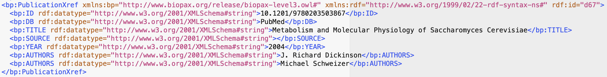

Background
WikiPathways allows you to add references at the pathway level, as well as to individual nodes and interactions. PubMed references can easily be added via PathVisio, but references from other sources such as ISBN and DOI, must be added in a semi-manual way, described here. References must be added in a structured format, and the minimum amount of information needed is an identifier and the corresponding database, or id type. The following types of references are currently supported:
| Database | Identifier example |
|---|---|
| PubMed | PMID: 22110403 |
| ISBN | 978-1-56619-909-4 (ISBN-13) or 1-56619-909-3 (ISBN-10) |
| DOI | 10.1201/9780203503867 |
| URL | https://en.wikipedia.org/wiki/Pentose_phosphate_pathway |
Challenge
Add a DOI literature reference for Metabolism and Molecular Physiology of Saccharomyces Cerevisiae to your pathway.
- Download the starter pathway and open the gpml in PathVisio.
- Double-click on the textbox in the upper-left that includes title and organism (Pathway Information area).
- Select the Literature tab and click the New reference button.
- Enter the following information for the DOI reference:
- Enter the DOI (10.1201/9780203503867) in the PubMed field.
- Enter the publication year (2004) in the Year field.
- Enter the Title (Metabolism and Molecular Physiology of Saccharomyces Cerevisiae) in the Title field.
- Enter the author names (J. Richard Dickinson, Michael Schweizer) in the Authors field, separated by semicolon.
- Click Ok to exit out of the Literature reference properties interface, and save the gpml.
- Next, open the gpml in a text editor. We are going to edit the reference we just added.
- The literature reference we added earlier will be in the
Biopaxsection of the GPML, which is usually at the end. The format of the reference should be as follows:

- Update the contents of the
bp:DBtag from PubMed to DOI. - When you are done, save your GPML file.
- Drag-and-drop the GPML file below to check if it is correct.